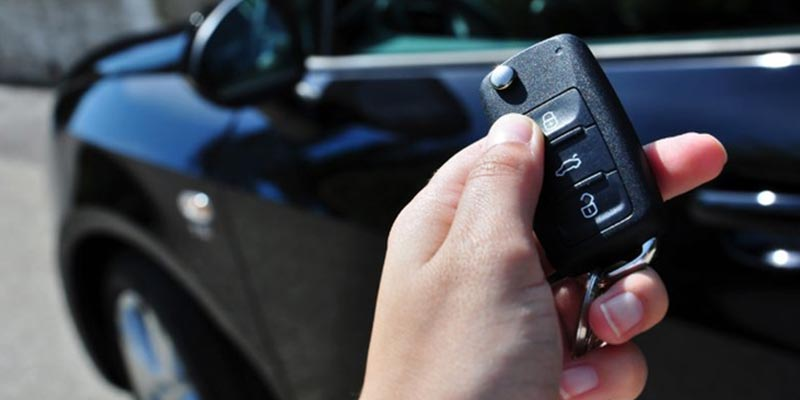

Як працює іммобілайзер у автомобілі — повний гід

Іммобілайзер (англ. immobiliser) — це електронна система захисту від угону, що дозволяє запустити двигун тільки оригінальним ключем. З'явилася в масових авто з 1995 року, в Європі стала обов'язковою з 1998. Принцип простий: у голівці ключа стоїть мікросхема-чіп (транспондер), що містить унікальний код. Авто має блок іммобілайзера, який цей код перевіряє при кожному запуску. Якщо код правильний — двигун заводиться. Якщо ні — стартер крутить, але паливо/іскра не подаються.
Виникли проблеми з іммобілайзером?
Зателефонуйте — продіагностуємо і відремонтуємо
Як працює іммобілайзер — пояснення на пальцях
- Ви вставляєте ключ у замок запалювання (або підносите smart-key до кнопки Start)
- Навколо замка є антена — котушка дроту, яка випромінює радіохвилю частотою ~125 кГц
- Чіп у ключі живиться від цієї хвилі (як NFC у телефоні) — батарейка не потрібна
- Чіп передає назад свій унікальний код (32-128 біт)
- Антена приймає код і передає у блок іммобілайзера
- Блок перевіряє: чи є цей код у списку дозволених ключів
- Якщо так — блок дає ECU (мозок двигуна) команду «дозволено запуск»
- ECU подає паливо, іскру, дозволяє стартеру крутити
- Двигун заводиться
Якщо чіп не той (порожній, пошкоджений, незареєстрований) — ECU блокує запуск. На приладовій панелі загоряється значок ключа або машини з ключем.
Покоління іммобілайзерів
- Іммобілайзер 1-го покоління (Imm1, до 2000) — простий: чіп має фіксований код, блок його порівнює зі збереженим. Легко обходився перепрограмуванням.
- Imm2 (2000-2005) — додано шифрування. Чіпи Texas 4C, Philips ID33, ID40.
- Imm3 (2005-2010) — Crypto-чіпи (4D, ID46). Блок надсилає challenge — чіп відповідає шифром.
- Imm4 (2010-2015) — HITAG-2, ID48 Megamos. Більш складне шифрування, ключ ←→ ECU прямо.
- Imm5 (2014+) — AES-шифрування. Megamos AES (VAG MQB), DST-AES / H-chip (Toyota), HITAG-AES, FBS4 (Mercedes). Кожен ключ персоналізований, клонування неможливе.
Де знаходиться блок іммобілайзера
Залежить від марки:
- VAG (VW, Audi, Skoda, Seat) — у блоку Kombi (приладовий щиток) або окремий блок під рульовою колонкою; на MQB — у блоці Komfort
- BMW — окремий блок EWS (до 2003), CAS під торпедо (2003-2014), FEM/BDC у нозі переднього пасажира (з 2014)
- Mercedes-Benz — у EZS (Electronic Zündschloss) — модулі замка запалювання
- Toyota / Lexus — у блоку імобілайзера 8A8H під торпедо
- Hyundai / Kia — у блоці SMK або окремому модулі
- Renault — у блоку UCH (Unite Centrale Habitacle)
- Ford — у блоку PATS, інтегрованому з PCM
Що буде якщо іммобілайзер вийде з ладу
Авто не запуститься, навіть з рідним ключем. На приладці значок ключа, в коді помилки — «communication with key» або «no immo signal». Причини:
- Зламана антена навколо замка запалювання (механічне пошкодження або обрив)
- Вийшов з ладу блок іммобілайзера (рідко — частіше прошивка зіб'ється)
- Сів чіп у ключі (буває, але рідко)
- Закінчилися ключі в пам'яті (якщо комусь хтось пробував програмувати чужий ключ і збив дані)
- Пошкоджена проводка від антени до блоку
Ремонтуємо: замінюємо антену (від 800 грн), відновлюємо блок (від 2000 грн), переписуємо прошивку (від 1500 грн).
Чи можна обійти іммобілайзер
Технічно — так, є емулятори імобілайзера (Julie, IMMO Off). Це коробочка, що під'єднується замість блоку і завжди передає ECU «дозволено». Використовується коли:
- Блок імобілайзера фізично знищений і замінити нема як
- Дорогий ремонт оригінального блоку не виправдовує себе
Мінуси: авто стає беззахисним від угону, страхова відмовить у виплаті при викраденні, при перепродажу покупець це помітить і ціна впаде. Тому робимо тільки в крайніх випадках.
Типи чіпів у ключах
| Чіп | Авто | Шифрування |
|---|---|---|
| Texas 4C | Toyota до 2004, Ford, Honda до 2007 | немає (fixed code) |
| Texas 4D60/4D63 | Ford, Mazda, Honda | Crypto-1 |
| Texas DST (G-chip) | Toyota, Lexus 2006-2014 | DST80 |
| Texas DST-AES (H-chip) | Toyota, Lexus з 2014 | AES-128 |
| Philips ID33-ID46 | Більшість євро/корейських авто | Crypto |
| Megamos ID48 | VAG до 2013 | Crypto-1 |
| Megamos AES | VAG MQB з 2013 | AES-128 |
| HITAG-2 | Opel, BMW, Renault до 2014 | Crypto-1 |
| HITAG-Pro | Ford, Mazda нові | індивідуальний |
| HITAG-AES | BMW FEM, Hyundai/Kia нові | AES-128 |
Часті запитання
Чи можна обійти іммобілайзер?
Технічно — так, шляхом установки емулятора, який «вдає» чіп. Але це різко знижує захист від угону, страхова може відмовити у виплаті, і це визначається при перевірці. Робимо тільки в крайніх випадках — коли блок імобілайзера вийшов з ладу і замінити його неможливо.
Що буде якщо чіп у ключі зламається?
Авто не запуститься. Лезо ключа поверне замок, стартер крутиться, але двигун не заведеться (або заведеться і одразу зупиниться). На приладовій панелі загориться значок іммобілайзера. Чіп ремонтуємо або замінюємо новим.
Чи можна перевстановити іммобілайзер з іншого авто?
Технічно можливо, але складно і дорого. Блок прив'язаний до VIN і ECU авто, потрібне перепрограмування обох. Тому простіше відремонтувати рідний блок або поставити емулятор.
Чим smart-key відрізняється від чіп-ключа?
Smart-key — це той самий чіп-ключ + додатковий радіомодуль 433 МГц для безконтактного доступу і запуску. Принцип роботи з іммобілайзером ідентичний.
Проблеми з іммобілайзером або чіп-ключем?
Продіагностуємо за 20 хвилин — підкажемо рішення